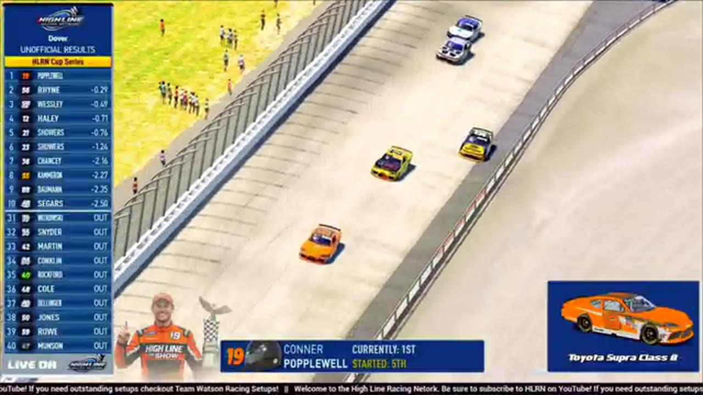

Tommy Ryan
Team assignment not stated in the structured owner record.
A PODIUM FILE WITH AN OPEN RESULT HORIZON
- Official files
- 2
- Central editions
- 1
- Exact tape cues
- 6
- Accepted podiums
- 1
Tommy Ryan has 1 position-specific top-three receipt: S1 R13 at Dover (P2). No feature win is currently supported in the accepted result ledger. A consistently stated team affiliation remains open for owner review. The currently indexed source window runs from February 16, 2026 through April 11, 2026.
The official tape index connects the name to 2 race files, 1 Central edition, and 6 primary-broadcast navigation cues. The densest direct-tape categories are restart (1 cue) and stage (1 cue). Those counts describe where the name is easiest to find; they are not fault, pace, or performance grades. A source-attributed car frame is published with its original video and timestamp. That is the current discovery map for Tommy Ryan.
That is enough for a real result dossier without pretending the archive knows every start or finish. Owner classifications can extend the record later through the same stable race IDs. Separately, 4 Highline Live files sit on the bonus shelf and never enter the official season ledger. The displayed name is labeled transcript normalized; that status remains visible so an owner roster can strengthen or correct the identity without rewriting the evidence trail. Those boundaries define Tommy Ryan's public HLRN file.
6 featured race-tape cues
These are discovery routes into complete HLRN broadcasts, not performance grades or inferred results.
- S1 / R13 · FINISH
Trevor Haley and Connor Papowell enter the final-lap decision
S1 / R13 at 1:47:59: The white flag opens the final-lap decision at Dover, with Trevor Haley, Connor Papowell, Tommy Ryan, and Grant Wesley named in the decisive group. The cut continues through the immediate finish call on the full primary broadcast.
Dover - S1 / R13 · STAGE
Stage 1 winner call at Dover
S1 / R13 at 1:06:52: The broadcast enters a stage-scoring discussion at Dover with Trevor Haley and Tommy Ryan in the scoring call. The clip preserves the on-air timing or points call without promoting it into a complete stage result; the accepted feature result ledger remains separate.
Dover - S1 / R13 · BATTLE
Kyle Cameron's wall brush brings Tommy Ryan back to Trevor Haley
Kyle Cameron brushes the wall beside leader Trevor Haley as Tommy Ryan closes on fresher tires. Ryan's four-tire stop is beginning to fade, and Haley stretches the margin with fewer than ten scheduled laps remaining.
Dover - S1 / R13 · INTERVIEW
Trevor Haley, Tommy Ryan, and Grant Wesley review Dover from the booth
S1 / R13 at 1:57:02: Trevor Haley, Tommy Ryan, and Grant Wesley join the HLRN booth for a first-person race account. The interview is preserved as context and does not create a placement claim outside the accepted result ledger.
Dover - S1 / R13 · RESTART
The Dover field takes the opening green
Tommy Ryan and Wyatt Thompson launch the actual Dover race with Nick Bowman third. The lead rows begin to single-file while the back half remains two by two.
Dover - S1 / R13 · STRATEGY
Tommy Ryan enters the Dover pit-strategy swing
S1 / R13 at 1:32:39: Pit timing starts to reorganize the field, with Tommy Ryan and Trevor Haley named in the sequence. The clip is a strategy receipt from the primary Dover broadcast, not a reconstructed scoring sheet.
Dover
Recent editions connected to Tommy Ryan
Verified team history is not consistently stated. Complete starts, finishes, and points remain open beyond the recovered results. Name normalization remains reviewable against owner records.